Privateer
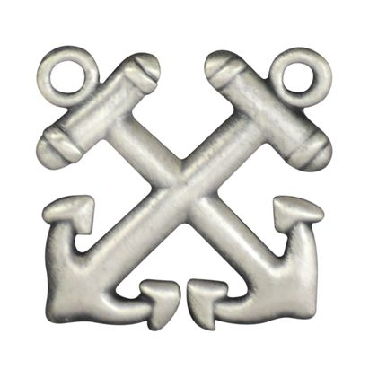
Privateer Recruit / Trainee
As a Privateer Recruit, you'll embark on a mission to master the fundamental tactics of our operations, working in the trenches alongside battle-hardened Privateers. Your training will encompass strategic asset defense, navigating the minefield of legal and ethical warfare, honing razor-sharp communication tactics, and mastering the arsenal of non-lethal weaponry. This position forms the critical beachhead for greenhorns in the industry, providing the hands-on engagement necessary to forge your skills. Brace yourself for a grueling training regimen; the skills and intel you'll acquire are the bedrock upon which your future victories will be built.
Hourly Rate: $14.35 / hr
Privateer Apprentice
As a Privateer Apprentice, you will work under the guidance of experienced Privateers to further develop your skills and knowledge. You will be responsible for executing various tasks related to security operations, such as patrolling, asset protection, and effective communication with team members. The Apprentice program will also introduce you to advanced non-lethal weapons and hand-to-hand combat techniques. Your dedication and hard work will prepare you for the next level in your career, and you will be rewarded with a more compensatory rate.
Hourly Rate: $18.00 / hr
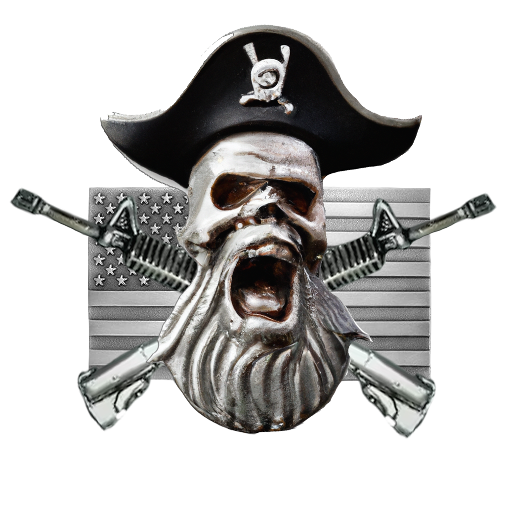
Privateer
As a Vested Privateer, upon successfully navigating the rigorous crucible of your training and proving your mettle, you will emerge battle-ready to operate independently in the field. This milestone in your career will be acknowledged with the honorable designation of PRIVATEER, a title that speaks volumes of your strategic acumen and operational readiness. Alongside this esteemed rank, you will be compensated commensurate with your demonstrated prowess, starting at a rate of $21.00 per hour. This is not merely a paycheck; it's a tangible recognition of your ability to navigate complex situations, execute strategic missions, and uphold the highest standards of our esteemed privateering corps. Welcome to the front lines, Privateer – your journey has just begun.
Hourly Rate: $21.00 / hr

Petty Officer 3rd Class (PO3)
As a Petty Officer 3rd Class, you'll begin to take on more responsibilities and leadership roles. You'll be involved in training and guiding junior personnel, as well as participating in more complex security operations. Your skills and knowledge in security and tactics will continue to grow, and you'll contribute to the overall effectiveness of the team.
Hourly Rate: $21.25 / hr

Petty Officer 2nd Class (PO2)
As a Petty Officer 2nd Class, you are ascending further up the command hierarchy, sharpening your tactical and security expertise while shouldering an even heavier mantle of responsibility. Your role now extends beyond mere execution; you are a strategist, a mentor, and a leader.
Your duties will encompass the critical task of managing and training the raw recruits, molding them into disciplined and efficient operatives. You are the forge upon which their skills are tempered. Furthermore, your strategic acumen will be called upon for the coordination and leadership of specific security operations. In these high-stakes scenarios, your decision-making and tactical prowess will be the difference between success and failure.
Your deepening expertise in security and tactics isn't just an asset—it's the keystone of your team's operational integrity and, by extension, the organization's overall mission success. Petty Officer 2nd Class, you are now a crucial cog in the machinery of our operational effectiveness, with your actions and decisions resonating far beyond the immediate battlefield. Lead with honor and foresight.
Hourly Rate: $21.50 / hr

Petty Officer 1st Class (PO1)
As a Petty Officer 1st Class, you've ascended to a position of formidable expertise and command in security and tactics. Your role is that of a seasoned tactician and a venerated leader, a beacon of wisdom and guidance in the tumult of operations.
Your leadership skills, sharpened and tempered through experience, place you at the forefront of training, mentoring, and steering the development of junior personnel. In your capable hands, these recruits will transform into skilled operatives, ready to face the challenges of our mission.
Your involvement extends to the strategic level, where you will be instrumental in planning and spearheading complex security operations. The safety and security of our clients and assets lie in your hands; your decisions and strategies will ensure that they remain impregnable. Your role is pivotal – you are not just executing missions, you are architecting them.
In this elevated position, Petty Officer 1st Class, you bear the responsibility and honor of maintaining the highest standards of operational excellence. Your actions directly impact the success and reputation of our unit. Lead with vigilance, precision, and unwavering commitment.
Hourly Rate: $21.75 / hr
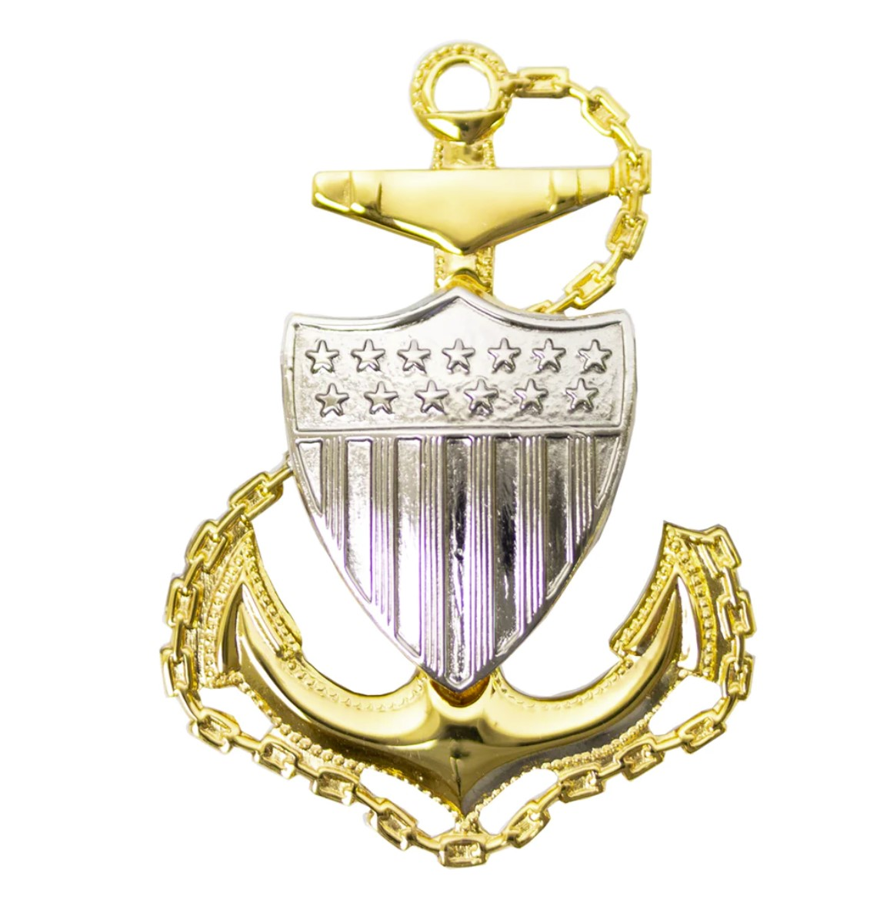
Chief Petty Officer (CPO)
As a Chief Petty Officer, you stand at the strategic apex of our security and tactical operations. Your role transcends that of a mere participant; you are a mastermind, a guiding force for the entire team. With expertise honed through years of rigorous experience, you are the cornerstone of wisdom and tactical proficiency in our organization.
Your oversight extends to the comprehensive orchestration of training programs, ensuring that every member of our unit is forged in the crucible of excellence and readiness. You are the architect of our security strategies, meticulously planning and executing complex operations that are the lifeblood of our organizational success.
Moreover, your responsibilities encompass safeguarding the overall operational effectiveness of the team. Your leadership is not just influential – it is integral to maintaining the highest standards of performance and professionalism within our ranks. Your insight, decisiveness, and unwavering command ensure that the team operates like a well-oiled machine, ready to respond to any challenge with precision and expertise.
Chief Petty Officer, your role is critical not just in leading but in elevating our team to unparalleled heights. Your actions and decisions set the tone for excellence, shaping the very future of our organization. Lead with authority, wisdom, and an unwavering commitment to our mission.
Hourly Rate: $22.00 / hr
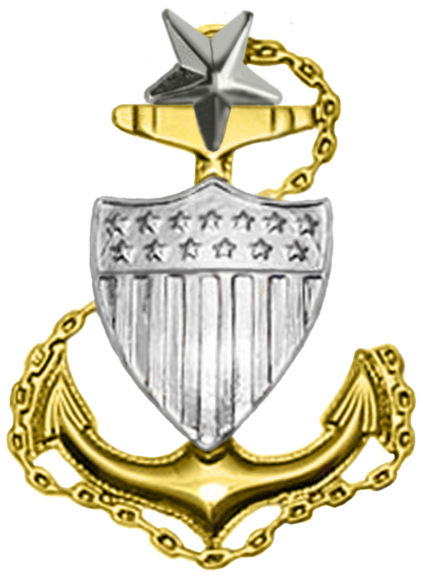
Senior Chief Petty Officer (SCPO)
As a Senior Chief Petty Officer, your role is tantamount to that of a seasoned general in the theater of security operations. Your leadership extends across multiple teams, each a cog in the larger mechanism of our strategic objectives. Your command is not just over individuals but over entire units, coordinating them like a skilled conductor leading an orchestra in a symphony of tactical precision.
Your vast reservoir of knowledge and experience in security and tactics is the bedrock upon which these large-scale operations are built. You're not just overseeing these missions; you're the strategist plotting their course, ensuring each maneuver and decision aligns with our overarching objectives. Your insight into the nuances of security operations is critical, turning potential vulnerabilities into fortified strengths.
Leadership, in your capacity, goes beyond mere direction; it's about mentorship, inspiring those under your command to exceed their limits. You're the guiding star for your teams, shaping their skills and fortitudes, fostering an environment where wisdom is shared, and excellence is the standard.
Senior Chief Petty Officer, your role is pivotal in the tapestry of our organization's success. Your decisions ripple through the ranks, influencing outcomes and setting precedents. Lead with the foresight of a tactician and the wisdom of a mentor, for in your hands lies the responsibility of shaping not just operations but the future leaders of our organization.
Hourly Rate: $22.25 / hr
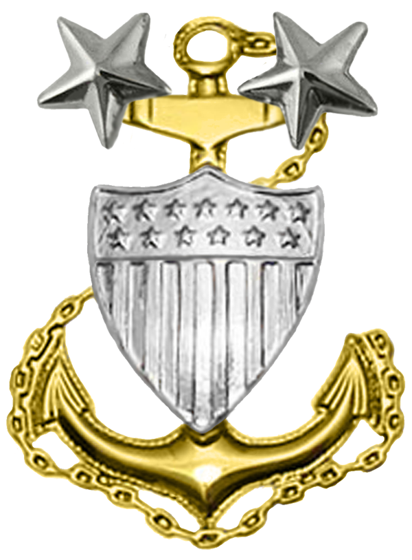
Master Chief Petty Officer (MCPO)
As a Master Chief Petty Officer, you stand at the zenith of your profession, embodying the epitome of leadership and expertise within our organization. Your position is not merely a rank, but a testament to your unwavering commitment, extensive experience, and unparalleled knowledge in the realms of security and tactics.
Your role as a top leader and subject matter expert is critical to the strategic fabric of our operations. You are the mastermind behind planning and executing large-scale operations that are crucial to our mission's success. Your tactical acumen and strategic foresight are the driving forces that turn plans into successful outcomes, ensuring that every operation is executed with precision and efficiency.
Beyond operational leadership, your influence permeates the entire organization. Your leadership skills are instrumental in shaping the future of our teams. You are a mentor to those climbing the ranks, a role model embodying the highest standards of professionalism and excellence. Your insights and guidance forge the next generation of leaders, ensuring the organization's legacy and success continue long into the future.
Master Chief Petty Officer, your role is more than a position; it's a cornerstone upon which the organization's strength and success are built. Lead with the wisdom of a strategist and the insight of a visionary, for your influence shapes not just the present, but the future of our organization.
Hourly Rate: $22.50 / hr
Command Master Chief Petty Officer (CMDC)
As a Command Master Chief Petty Officer, you will hold the highest enlisted rank within the organization. Your leadership, expertise, and extensive experience in security and tactics will be critical for the overall success of the organization. You'll play a key role in strategic planning, policy development, and decision-making. You'll also be responsible for mentoring, guiding, and developing future leaders to ensure the continued success and growth of the organization.
Hourly Rate: $22.75 / hr
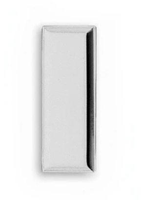
Lieutenant Junior Grade (LtJG)
As a Lieutenant Junior Grade, you step into the arena as a commissioned officer, entrusted with a mandate that blends leadership, management, and strategic foresight. This rank is not just a step in your career ladder; it's a launchpad for your leadership trajectory within the organization.
Your primary theater of operation will encompass the oversight of security operations. Here, your role is multifaceted: you're the tactician plotting operational courses, the leader steering your team through the complexities of each mission, and the guardian ensuring that every operation is executed with precision and tactical superiority.
In the realm of personnel management, your responsibilities are both strategic and interpersonal. You're tasked with marshaling your team's talents, aligning their skills with our operational objectives, and fostering an environment where excellence is the norm. Your leadership is key in building a unit that is cohesive, efficient, and ready to face any challenge.
Collaboration with other officers in planning and executing high-level strategic initiatives is another critical aspect of your role. In these joint operations, your ability to synergize your tactical knowledge with the broader strategic objectives of the organization will be crucial. You're a bridge between the strategic vision of your superiors and the operational execution on the ground.
Your background in security and tactics, honed through rigorous training and practical experience, provides a solid foundation for your decision-making. Combined with your innate leadership abilities, this makes you an invaluable asset in driving the success of your team and, by extension, the organization.
Lieutenant Junior Grade, your commission is a testament to your potential and capabilities. Lead with confidence, embrace the challenges, and chart a course for success that exemplifies the highest standards of our organization.
Hourly Rate: $23.00 / hr
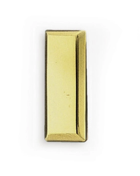
Lieutenant (Lt)
As a Lieutenant, you are positioned at a critical juncture within the organization, commanding a role that demands both tactical acumen and exemplary leadership. Your rank signifies not just authority, but a profound responsibility in steering the course of our operations and the development of our personnel.
Your jurisdiction extends over multiple teams, each a strategic unit under your command. Your duty here is to ensure these teams operate as cohesive, efficient units, ready to tackle the complexities of large-scale security operations. Your leadership is the keystone in this endeavor, shaping and synchronizing their efforts towards the successful execution of our mission objectives.
The extensive knowledge and experience you have garnered in security and tactics are indispensable assets. In the theater of operations, your strategic insights and tactical decisions are crucial in navigating the myriad challenges that arise, turning potential threats into controlled situations, and ensuring the overarching success of each operation.
Your role in mentoring team members is equally vital. As a Lieutenant, you are not just a commander but a mentor, responsible for nurturing the growth and development of those under your command. Your guidance is a beacon, shaping their professional growth and honing their skills to meet the demands of our high-stakes environment.
Furthermore, your involvement in strategic planning and decision-making at the highest levels places you at the vanguard of our organizational direction. Here, your perspective and input are invaluable, contributing to the formulation of strategies that define our operational footprint and our future trajectory.
Lieutenant, your position within the organization is a testament to your leadership, tactical expertise, and strategic vision. Lead with the assurance that comes from experience, guide with the wisdom of a mentor, and decide with the clarity of a strategist. In your hands lies not just the responsibility for present operations, but the shaping of our organization's future.
Hourly Rate: $23.25 / hr
Lieutenant Commander (LtCdr)
As a Lieutenant Commander, you ascend to a position of heightened responsibility and strategic importance within our organization. Your rank as a senior commissioned officer places you at the helm of large teams, where your leadership is not just a role but a crucial factor in our operational success and organizational integrity.
Your mission envelope encompasses the management of complex security operations. These operations demand not only tactical precision but also strategic foresight, and your role is pivotal in orchestrating these elements seamlessly. You're tasked with navigating the intricacies of each operation, ensuring that every maneuver aligns with our overarching strategic goals while mitigating risks to the fullest.
Your deep understanding of security and tactics is the backbone of your decision-making process. This expertise, honed through rigorous training and field experience, equips you with the insight necessary to anticipate challenges, counter threats effectively, and exploit strategic opportunities. Your tactical decisions will directly impact the success and safety of the operations you command.
Beyond operational command, your exceptional leadership abilities are key in steering the organization through turbulent and challenging situations. Your guidance is a beacon for your teams, instilling confidence and fostering a culture of excellence and resilience. You are responsible for nurturing the professional growth of your teams, shaping them into units capable of executing high-stakes missions with unwavering competence.
Moreover, as a Lieutenant Commander, your influence extends to the strategic planning and policy formulation aspects of the organization. Your insights and contributions are vital in shaping policies that ensure the safety and security of our clients and assets, as well as the long-term success and sustainability of our operations.
Lieutenant Commander, your role is critical in both the trenches of tactical operations and the strategic echelons of organizational leadership. Lead with the authority of your rank, the wisdom of experience, and the vision of a strategist. Your actions and decisions are the bulwarks that safeguard our mission's success and our organization's legacy.
Hourly Rate: $23.50 / hr
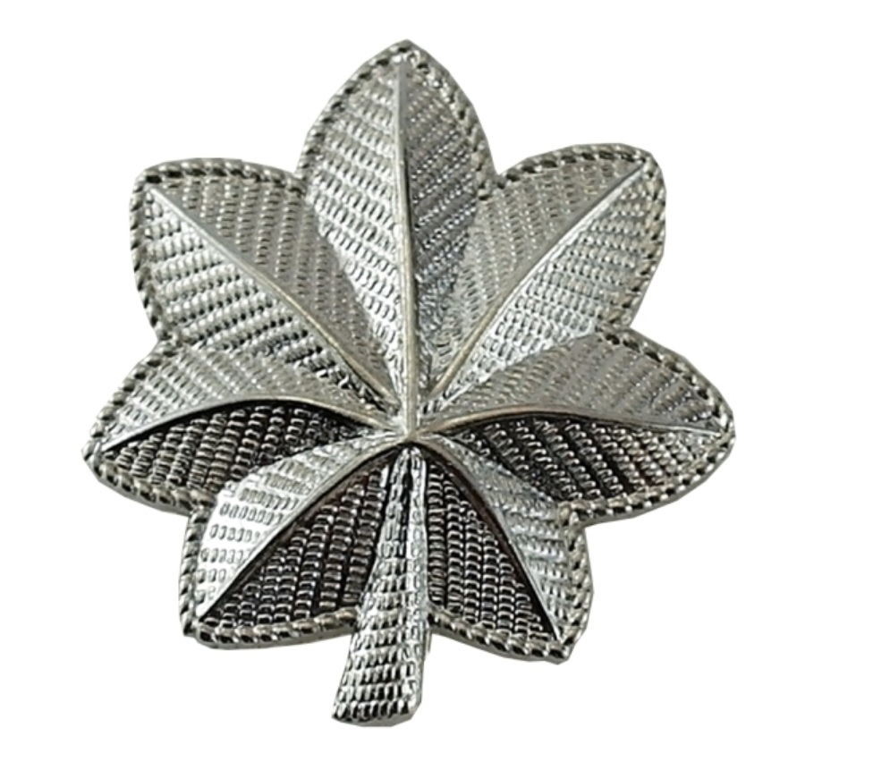
Commander (Cdr) (Executive Officer)
As a Commander, you have reached a pivotal high-rank in our command structure, a position that places you at the very heart of our organization's strategic and operational leadership. In this role, you bear a significant responsibility not just for the direction of specific operations, but for the overarching strategy and performance of the organization.
Your command is characterized by a comprehensive scope of duties. Firstly, you are the strategist, tasked with developing and refining our operational doctrines. Your deep understanding of security and tactics forms the foundation of this role. It's your acumen in these areas that will enable you to devise and execute security operations that are not only successful in their immediate objectives but also align with our long-term strategic goals.
Moreover, your exceptional leadership skills are crucial in guiding the organization through the complex dynamics of our operational environment. You are responsible for steering your teams towards peak performance, ensuring that each member and unit under your command operates with the utmost efficiency and effectiveness. Your leadership fosters a culture of excellence, resilience, and adaptability - qualities essential for the success of our operations.
Collaboration with the Captain is a key aspect of your role. Together, you will work to ensure that the organization remains not just operationally effective but also financially robust. This involves adapting to the ever-evolving landscape of the industry, identifying and seizing opportunities for growth, and overcoming challenges that may arise. Your strategic input will be vital in maintaining and enhancing our profitability and sustainability, ensuring we continue to provide top-tier service to our clients.
As a Commander, your decisions and strategies have far-reaching implications. You are a custodian of our organization's reputation and a key driver of its success. Lead with strategic insight, operational wisdom, and a steadfast commitment to our mission and values. Under your command, the organization is poised to not just navigate the currents of the industry but to set the course for others to follow.
Hourly Rate: $Profit Dependent
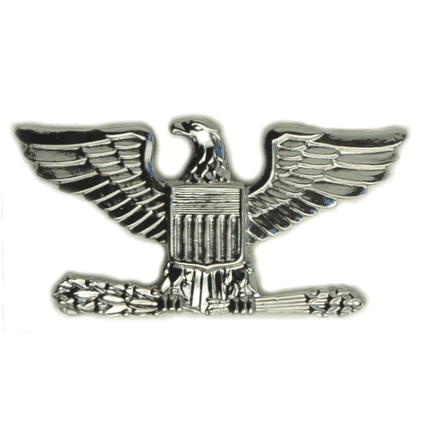
Captain (Capt) (Commanding Officer)
As the Captain, you stand at the helm of our organization, embodying the highest commissioned officer rank, a position that demands exceptional leadership, strategic foresight, and operational expertise. Your role is not merely one of command, but of visionary guidance, steering the organization through the complex waters of the security and tactical industry.
Your extensive experience and expertise in security and tactics are the compass by which the organization navigates. These skills are not just tools for operational success; they are critical in shaping our strategic approach, enabling us to outmaneuver competitors and anticipate industry shifts. Your ability to synthesize this knowledge into effective strategies is paramount in maintaining our position at the forefront of the industry.
As the primary architect of the strategic direction of the company, your decisions have profound implications. You are tasked with the judicious allocation of resources, ensuring that every asset, personnel, and technology is optimally utilized to achieve our mission objectives. This responsibility also includes navigating the organization through the financial currents, ensuring profitability, and sustainable growth amidst a competitive landscape.
Your role extends beyond strategy and operations. As the Captain, you are a mentor and a role model. The guidance and mentorship you provide are invaluable assets in cultivating the next generation of leaders within our organization. Your wisdom and experience are the beacons that guide these emerging leaders, shaping them into capable, strategic thinkers who will carry forward the legacy of the organization.
Captain, your leadership is the cornerstone upon which the organization's success is built. Lead with the assurance of your experience, the clarity of your vision, and the unwavering commitment to our mission. Under your command, the organization is poised not just to meet the challenges of today but to shape the security landscape of tomorrow.
Hourly Rate: $Profit Dependent
Intelligence
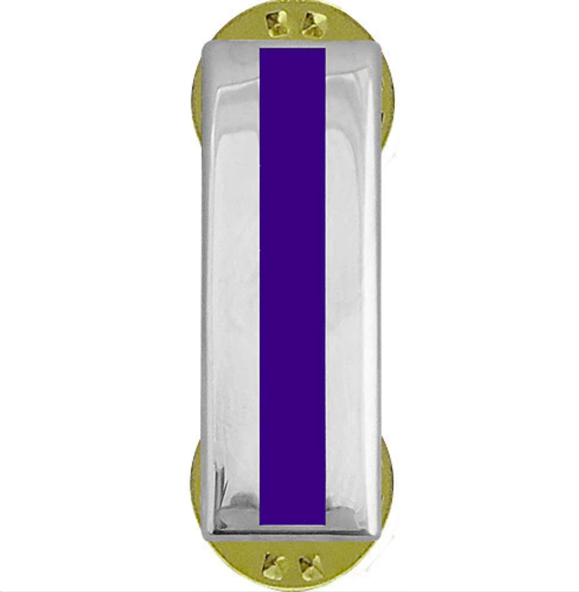
Intelligence / Operations Analyst
As part of our commitment to operational excellence and strategic superiority, we are investing in your development as a certified intelligence analyst. This endeavor underscores the critical role intelligence plays in our organization's success. Upon completion of your training, your responsibilities will expand significantly, placing you at the nexus of our intelligence and operational capabilities.
As an intelligence analyst, you will be the architect of our intelligence profiles. Your work will involve meticulously assembling and analyzing data to create comprehensive intelligence reports. These reports will not only inform our strategic decisions but also provide our clients with the crucial insights they need to navigate their security landscape.
Your responsibilities will also include conducting field risk analysis and developing post orders. This task demands a keen eye for detail and an ability to synthesize complex information into actionable strategies. Your analyses will directly influence the planning and execution of our field operations, ensuring that they are both effective and aligned with our broader strategic objectives.
As the primary dispatch supervisor, you will be the linchpin in our information flow. Dispatch is the main vein through which intelligence and operational data pulse into our company. Your role in managing this crucial function is pivotal, ensuring that information is not only accurately relayed but also effectively utilized in real-time decision-making.
Furthermore, your involvement in patrol operations will require you to coordinate high-level strategy. Your insights and intelligence will shape the tactical decisions made at this level. In certain situations, you may also be called upon to take the lead in planning and executing operations. This responsibility underscores the trust placed in your judgment and the importance of your role in the operational success of our organization.
Your progression into this role is not just a step forward in your career; it's a significant leap in the operational capabilities of our organization. As you embark on this journey, remember that your decisions and analyses will have a profound impact. You are not just an analyst or a supervisor; you are a strategic asset, integral to our mission's success and our organization's continued excellence.
Hourly Rate: $18.00 / Hr. +
Dispatch
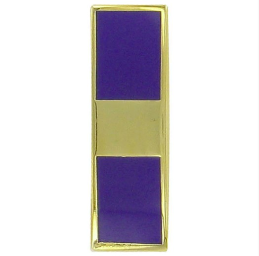
Dispatch Trainee
As a Dispatch Trainee, you are at the initial phase of a crucial and dynamic role within our operational structure. Think of this period as your tactical boot camp for dispatch operations. It's a time dedicated to learning, gaining hands-on experience, and building a solid foundation in the intricacies of dispatch communication and coordination.
During this phase, making mistakes is not just expected, it's encouraged as a valuable part of the learning process. Each error is a lesson, an opportunity to deepen your understanding and refine your skills. You are encouraged to ask questions, no matter how basic they may seem. Inquiries are the ammunition of learning, essential for your development and proficiency in this role.
You won't be navigating this terrain solo. Throughout this training period, you'll be accompanied and supported by experienced personnel. Their guidance is your navigational chart, helping you understand the complexities of dispatch operations, from managing communication channels to coordinating responses in real-time scenarios.
Your role as a Dispatch Trainee is more than just an introductory phase; it's the cornerstone of your future effectiveness in a critical position. The skills and knowledge you acquire now will be instrumental in ensuring that when the time comes for you to operate independently, you'll be fully equipped to handle the demands and challenges of the dispatch role with confidence and competence. Remember, every great strategist started as a learner – your journey is just beginning.
Hourly Rate: $16.00 / hr
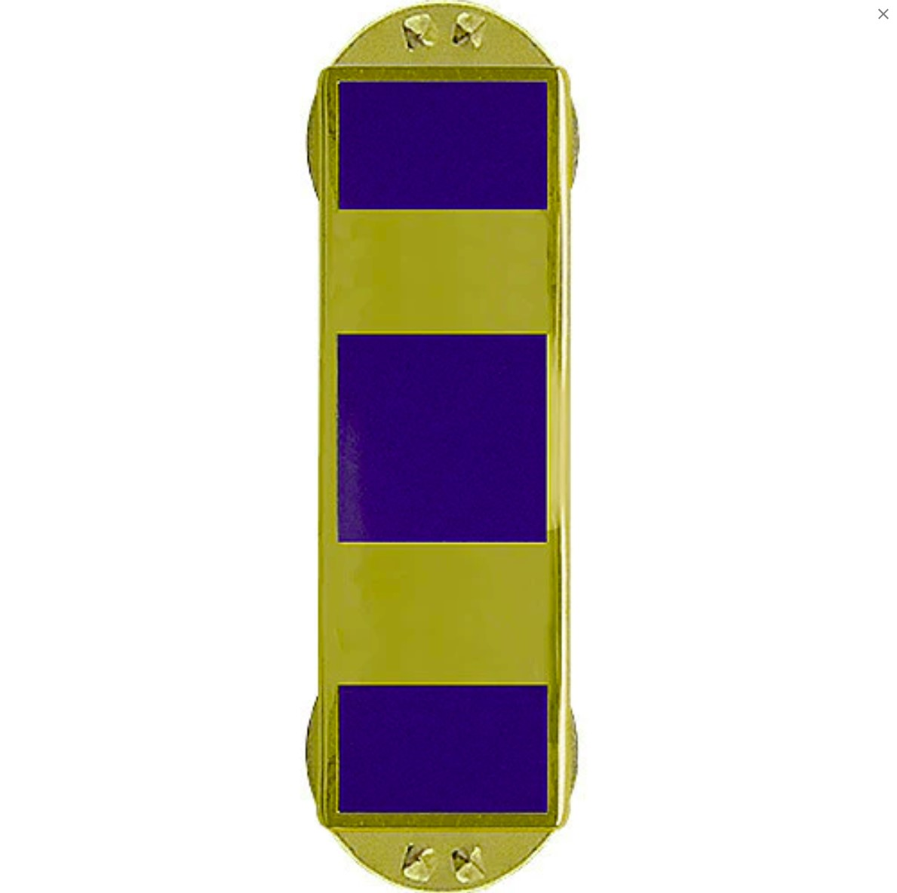
Dispatch I
As a Dispatcher I, you've successfully transitioned from the training phase to full operational status in your role. You're now at the controls, a fully-fledged dispatcher, an integral part of our organization's communication and response backbone. This is where your training, skills, and instincts coalesce into action.
In this role, you're not just operating the dispatch system; you're the linchpin of information flow and response coordination. Your newfound comfort and confidence in this position is a testament to your hard-earned proficiency. It signifies that you're ready to handle the multifaceted challenges of dispatch duties — from managing critical communications to making swift, tactical decisions that impact our operational effectiveness.
Your readiness to provide answers and solutions to any queries or situations that arise while on duty is crucial. It reflects your understanding of the operational landscape and your ability to think on your feet. Remember, the dispatcher's seat is more than just a workstation; it's a strategic command post. Your actions and decisions can have significant impacts on the outcomes of our operations.
Dispatcher I, you are now a key player in ensuring that our teams in the field have the information and support they need to execute their missions successfully. Continue to build on this foundation of confidence and competence, and remain vigilant and adaptable. Your role is critical in maintaining the smooth operation and success of our organizational endeavors.
Hourly Rate: $16.50 / hr
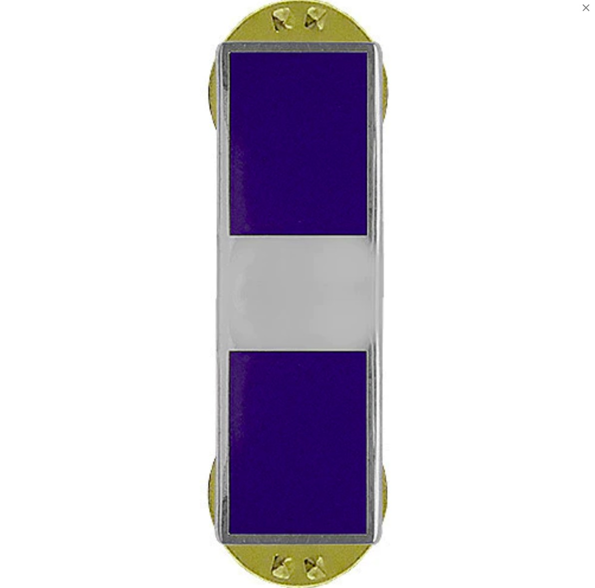
Dispatch II
As a Dispatcher II, you've elevated your role within our organization, embracing a multifaceted set of responsibilities that showcase your expanding skill set and deepening knowledge. Your progression in this role is a clear indication of your adaptability and commitment to our mission.
Your training in our in-house software and video editing has opened new operational dimensions. You're now adept at editing videos and reports for officers, crafting comprehensive case videos that are essential for operational debriefings, legal proceedings, or training purposes. Additionally, your skills extend to creating impactful videos for our social media platforms, a task that not only demands technical proficiency but also a keen understanding of how to effectively communicate our engagements to the public.
Simultaneously, you continue to operate as a dispatcher, a role that remains vital to our operational framework. Your ability to juggle these dual responsibilities speaks to your organizational skills and your capacity to maintain focus and efficiency under multifaceted demands.
Your journey through Dispatcher II also involves a deep dive into critical areas of knowledge. You're gaining substantial insights into criminal law and enhancing your understanding of land law, both crucial for informed decision-making and tactical planning. Additionally, your learning extends to tactics and urban combat resource management, essential skills for commanding a paramilitary force from a remote location. This broadening of your expertise is not just academic; it directly enhances your operational capabilities and strategic foresight.
In this role, you also step into a supervisory position over Dispatcher I and Trainee personnel. This aspect of your role underscores the trust placed in your judgment and leadership. It's your responsibility to guide, mentor, and oversee these team members, ensuring they adhere to our high standards and continue to develop their skills.
Dispatcher II, your role is a complex tapestry of technical skills, tactical knowledge, and leadership responsibilities. Continue to hone these skills, for they make you an indispensable asset to our organization and a guiding force for those under your command. Your contributions are pivotal to our operational success and the continual strengthening of our team.
Hourly Rate: $17.00 / hr